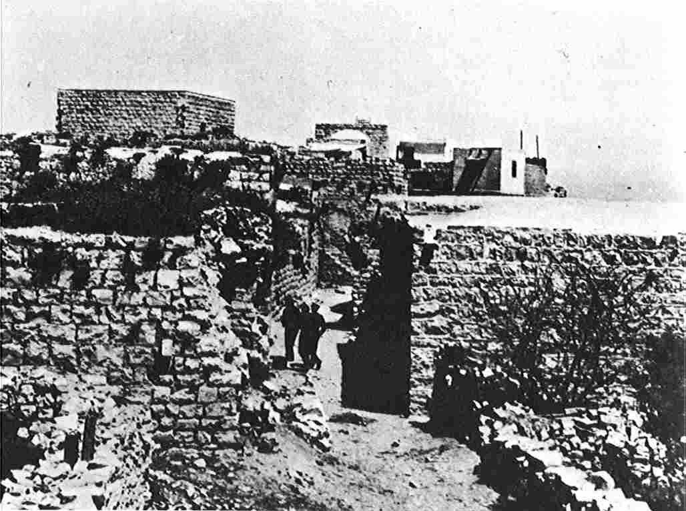
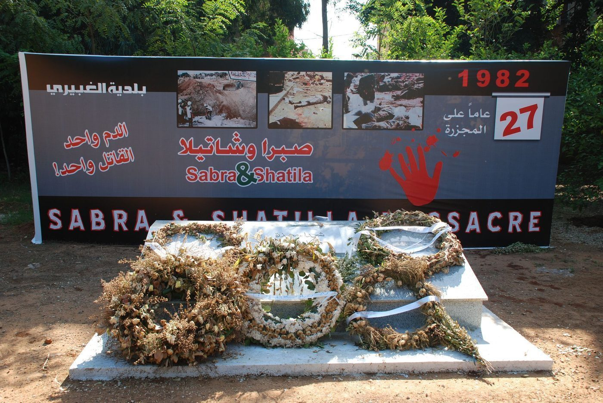

Eine Chronik über 106 Jahre
Diese Seite versammelt die dokumentierten Massaker und Massentötungen an Palästinensern in einer durchgehenden, aufklappbaren Chronik – und sie beginnt nicht erst mit dem Krieg von 1947/48, sondern in der britischen Mandatszeit: bei den Unruhen von 1920 bis 1933, deren palästinensische Todesopfer überwiegend durch britische Polizei und Militär starben, bei der Niederschlagung des Arabischen Aufstands 1936–1939 und bei der Bombenkampagne der Irgun gegen Marktplätze und Busse. Täter werden präzise benannt – auch dort, wo es nicht israelische Kräfte waren, sondern britische Truppen, libanesische Milizen oder die jordanische Armee. Opferzahlen stehen grundsätzlich als Spanne mit Zuschreibung; was sich nicht sauber belegen lässt, wird transparent benannt statt behauptet. Massaker und Terroranschläge an Juden und Israelis werden am Ende der Chronik ausdrücklich mitbenannt.
Ein Kapitel dieser Chronik verdient besondere Aufmerksamkeit, weil es erst seit 2022 durch Archivfunde umfassend belegt ist: Während des Krieges von 1948 leitete das Wissenschaftskorps der Haganah unter dem Decknamen „Cast Thy Bread“ Typhus-Erreger in Brunnen und Wasserleitungen palästinensischer Städte und Dörfer ein – am dokumentiertesten in Akko, mit weiteren Einsätzen und Versuchen in Gaza, im Negev und in Galiläa, gebilligt auf höchster Ebene und mit Wissen David Ben-Gurions. Die peer-reviewte Studie von Benny Morris und Benjamin Z. Kedar (Middle Eastern Studies, 2022) hat die Kampagne aus israelischen Archivakten rekonstruiert. → Zum vollständigen Chronik-Eintrag mit Quellen- und Forschungslage
MethodikVorbemerkung zu Begriff und Quellenlage
Diese Chronik erfasst Ereignisse, bei denen palästinensische Zivilisten oder wehrlose Gefangene gezielt oder wahllos getötet wurden. Die Quellenlage ist unterschiedlich gut: Für viele Fälle aus dem Krieg von 1948 stützt sich die Forschung auf inzwischen freigegebene israelische Militär- und Regierungsakten (u. a. ausgewertet von Benny Morris), auf UN-Berichte sowie auf palästinensische Zeitzeugen- und Ortsforschung (u. a. Aref al-Aref, Birzeit-Universität, Walid Khalidi). Der israelische Historiker Benny Morris zählt für den Krieg 1948 rund zwei Dutzend Massaker durch jüdische bzw. israelische Kräfte. Opferzahlen sind häufig umstritten; sie werden hier grundsätzlich als Spanne mit Zuschreibung genannt. Täter werden präzise benannt – einschließlich der Fälle, in denen nicht israelische Kräfte, sondern libanesische Milizen oder die jordanische Armee verantwortlich waren.
Britische Mandatsmacht
Die meisten palästinensischen Toten vor 1947.
Karte umdrehenDie britischen Untersuchungskommissionen stellten selbst fest, dass die meisten palästinensischen Toten der Unruhen von 1921 und 1929 durch britische Kräfte starben. Bei der Niederschlagung des Aufstands 1936–1939 töteten Armee und Polizei nach amtlicher Zählung über 2.000, nach Walid Khalidi 3.832 Palästinenser – dazu 100–112 Gehängte und Zehntausende Internierte.
Irgun (Etzel)
Bomben auf Märkte und Busse: mindestens 250 tote Palästinenser.
Karte umdrehenDie revisionistisch-zionistische Untergrundorganisation brach 1937 mit der offiziellen zionistischen Zurückhaltungspolitik (Havlagah). Benny Morris hebt hervor, dass damit erstmals massive Sprengsätze in Menschenmengen in den Konflikt eingeführt wurden. Jewish Agency und Haganah verurteilten die Anschläge damals öffentlich.
Haganah, Palmach, israelische Armee – und andere
Rund zwei Dutzend Massaker allein im Krieg von 1948 (Benny Morris).
Karte umdrehenVom Überfall auf Al-Chisas im Dezember 1947 über Deir Yassin, Lydda und al-Dawayima bis zu Qibya, Kafr Qasim und den Gazakriegen – der Hauptteil dieser Chronik. Präzise benannt werden auch andere Täter: libanesische Milizen (Tel al-Zaatar, Sabra und Schatila) und die jordanische Armee („Schwarzer September“).
| Abschnitt | Zeitraum | Sprung | Wem die Taten zugeschrieben werden |
|---|---|---|---|
| Britische Mandatszeit | 1920–1935 | zum Abschnitt | Britische Polizei und Militär; bei den Unruhen von 1920 ist die Täterschaft der palästinensischen Todesfälle ungeklärt |
| Der Arabische Aufstand | 1936–1939 | zum Abschnitt | Britische Armee und Polizei: Kollektivstrafen, Dorfsprengungen, Erschießungen |
| Irgun-Bombenkampagne | 1937–1939 | zum Abschnitt | Irgun (Etzel): Sprengsätze auf Märkten und in Wohnvierteln |
| Krieg 1947–1949 (Nakba) | 1947–1949 | zum Abschnitt | Haganah, Palmach, Irgun/Lechi und die israelische Armee |
| Nach der Staatsgründung | 1951–1956 | zum Abschnitt | Israelische Armee, Einheit 101, Grenzpolizei |
| Jordanien und Libanon | 1970–1982 | zum Abschnitt | Jordanische Armee und libanesische Milizen – zwei der drei Fälle ohne israelische Täterschaft, Sabra und Schatila israelisch abgeriegelt |
| Jerusalem, Hebron, Oktober 2000 | 1990–2000 | zum Abschnitt | Israelische Polizei am Tempelberg und im Oktober 2000; ein israelischer Einzeltäter in der Ibrahimi-Moschee |
| Gazakriege | 2008–2026 | zum Abschnitt | Israelische Armee und Luftwaffe |
| Nachbarstaaten | 1970–2026 | zum Abschnitt | Israelische Armee gegen Zivilisten in Ägypten und im Libanon — Bahr al-Baqar, Qana, Pager, 23.9.2024, 8.4.2026 |
| Gegen Juden und Israelis | 1929–2023 | zum Abschnitt | Dieselben Maßstäbe, eigener Abschnitt |
So liest man diese Chronik: Die rechte Spalte nennt, wem die jeweiligen Taten in der Forschungsliteratur zugeschrieben werden — das ist nicht durchgehend Israel. Die britische Mandatsmacht, jordanische und libanesische Kräfte stehen hier mit derselben Genauigkeit wie israelische Einheiten; wo eine Zuschreibung unsicher ist, steht das ausdrücklich am Fall.
Mandatszeit 1917–1947: die Gewalt begann vor der Nakba
Zur Ehrlichkeit dieser Chronik gehört zweierlei. Erstens: Die großen Gewaltausbrüche der 1920er Jahre waren überwiegend palästinensische Angriffe auf Juden – bei den Unruhen von 1920, 1921 und 1929 starben insgesamt rund 185 Juden, darunter 65–68 beim Massaker von Hebron und 18–20 in Safed (beide 1929); diese Massaker an Juden sind auf den Seiten Epochen, Zionismus & Staatsgründung und Die Juden im Land benannt. Zweitens – und das fehlt in gängigen Darstellungen oft: Bei denselben Ereignissen starben jeweils auch Dutzende Palästinenser, ganz überwiegend durch britische Polizei und Militär bei der Niederschlagung – so ausdrücklich festgestellt von den britischen Untersuchungskommissionen selbst (Haycraft 1921, Shaw 1930). Danach folgen die beiden großen Gewaltblöcke vor der Nakba: die britische Niederschlagung des Arabischen Aufstands 1936–1939 und die Irgun-Bombenkampagne 1937–1939.

1920–1935Die 1920er und frühen 1930er Jahre
Der Arabische Aufstand 1936–1939: die britische Niederschlagung
Der Arabische Aufstand von 1936–1939 – Generalstreik, Steuerboykott, Guerillakrieg – wurde von der britischen Armee und Polizei mit einer Härte niedergeschlagen, die der Militärhistoriker Matthew Hughes in der bislang gründlichsten archivgestützten Studie („The Banality of Brutality“, English Historical Review, 2009, peer-reviewed) als systematisch beschreibt. Als Gesamtbilanz nennt diese Seite die Spanne: rund 2.000 (nur amtlich gezählte Kampftote) bis über 5.000 getötete Palästinenser (Walid Khalidi: 5.032; Hughes: 5.000–6.000), die große Mehrheit durch britisches Militär und Polizei – dazu 100–112 Gehängte, Zehntausende Internierte und rund 2.000 bis 5.000 zerstörte Häuser. Wer was zählt, zeigt der Umschalter:
Armee und Polizei töteten nach den amtlichen britischen Zahlen über 2.000 Palästinenser im Kampf; 100–112 Palästinenser wurden gehängt (gängigste Einzelangabe: 108); 961 Menschen starben laut amtlicher Statistik durch „Banden- und Terroraktivitäten“ (Zuschreibung: Hughes 2009, der die amtlichen Statistiken referiert).
Walid Khalidi (From Haven to Conquest, 1971, S. 846–849) zählt 19.792 Opfer insgesamt, davon 5.032 Tote – aufgeschlüsselt in 3.832 durch die Briten Getötete und 1.200 Tote durch „Terrorismus“ (d. h. innerarabische bzw. Bombengewalt) – sowie 14.760 Verwundete. Seine Vergleichsrechnung zur Größenordnung: 5.032 Tote bei rund 1.056.000 Nichtjuden in Palästina 1939 entsprächen proportional rund 200.000 toten Briten oder 1.000.000 toten Amerikanern.
Rashid Khalidi (The Hundred Years' War on Palestine, 2020): Bis 1939 wurden 10 Prozent der erwachsenen männlichen palästinensischen Bevölkerung getötet, verwundet, inhaftiert oder verbannt; als Todeszahl nennt er die Spanne 2.000–5.000.
Matthew Hughes (English Historical Review, 2009) arbeitet mit einer Gesamtspanne von 5.000–6.000 getöteten Palästinensern, davon der größte Teil durch die Briten.
Ein Teil der Toten ging auf innerarabische Kämpfe zurück (Rebellen gegen mutmaßliche Kollaborateure, das Husseini- gegen das Naschaschibi-Lager): Yuval Arnon-Ohanna behauptet 3.000–4.500 solcher Opfer; Hillel Cohen hat diese Zahl quellenkritisch auf 900–1.000 reduziert – Hughes referiert beide und folgt der Tendenz Cohens. Auf der Gegenseite starben mehrere hundert Juden (gängig: rund 300–500) und 262 Briten (amtliche Zahlen). Zur britischen Truppenstärke nennt Rashid Khalidi 100.000 Mann; belegt sind nach Hughes rund 25.000 zusätzliche Truppen, ab Ende 1938 zwei volle Divisionen – diese vorsichtigere Angabe gilt auf dieser Seite.
Die Irgun-Bombenkampagne gegen palästinensische Zivilisten 1937–1939
Die revisionistisch-zionistische Untergrundorganisation Irgun Zvai Le'umi (Etzel) brach ab November 1937 mit der offiziellen zionistischen Zurückhaltungspolitik (Havlagah) und verübte Bomben- und Schussanschläge auf palästinensische Zivilisten – Marktplätze, Busse, Cafés. Benny Morris (Righteous Victims) schreibt, diese Bomben „säten Terror in der arabischen Bevölkerung und erhöhten deren Verluste erheblich“; er hebt hervor, dass damit erstmals massive Sprengsätze in Menschenmengen in den Konflikt eingeführt wurden – Jahre bevor arabische Gruppen diese Taktik übernahmen. Die Gesamtbilanz der Irgun-Anschläge auf arabische Ziele in diesem Zeitraum: mindestens 250 getötete Palästinenser. Zur fairen Einordnung gehört dreierlei: Die Kampagne war eine Minderheitenlinie – Jewish Agency und Haganah verurteilten die Anschläge damals öffentlich, die Haganah beteiligte sich nicht; sie stand im Kontext des Arabischen Aufstands, in dem parallel arabische Gewalt gegen jüdische Zivilisten stattfand (mehrere hundert Tote, siehe oben); und die Opferzahlen einzelner Anschläge schwanken zwischen den Zählungen (Morris gegenüber zeitgenössischer Presse) und stehen deshalb als Spanne.
Dokumentierte Massaker an Palästinensern seit 1947

Der Krieg von 1947–1949 (Nakba)
Im Bürgerkrieg ab November 1947 und im ersten arabisch-israelischen Krieg ab Mai 1948 flohen oder wurden über 700.000 Palästinenser vertrieben. Massaker spielten dabei eine doppelte Rolle: als unmittelbare Gewalttat und als Fluchtauslöser für umliegende Ortschaften.
1950er Jahre: Vergeltungsaktionen, Militärverwaltung, Suezkrieg
1970er und 1980er Jahre: Jordanien, Libanon — und Galiläa
1990 bis 2000: Jerusalem, Hebron, Oktober 2000
Gazakriege ab 2008
Massentötungen von Zivilisten in den Nachbarstaaten
Diese Chronik dokumentiert Massaker an Palästinensern. Die israelische Armee hat aber auch in den Nachbarländern Zivilisten in großer Zahl getötet — Libanesen und Ägypter, in Lagern auch Palästinenser. Diese Fälle stehen hier mit denselben Maßstäben: Täter, Opferzahl mit Quelle, Ausgang. Der Zusammenhang Land für Land: Palästinas Nachbarstaaten.
| Datum | Ort | Täter | Opfer (Quelle) | Ausgang |
|---|---|---|---|---|
| 8. April 1970 | Grundschule Bahr al-Baqar (Ägypten) | Israelische Luftwaffe | 46 tote Kinder, über 50 verletzt | keine Untersuchung |
| 18. April 1996 | UNIFIL-Stützpunkt Qana (Libanon) | Israelische Artillerie | 106 Tote (UN), über 50 Kinder | UN-Bericht van Kappen: Irrtum „unwahrscheinlich“; niemand belangt |
| 30. Juli 2006 | Qana (Libanon) | Israelische Luftwaffe | 28 Tote, 16 Kinder (HRW) | Militäruntersuchung ohne Befund |
| 17./18. September 2024 | Pager-Anschläge (Libanon, Syrien) | Israelischer Geheimdienst, von Netanjahu genehmigt | 42 Tote, 12 Zivilisten, 2 Kinder; ~4.000 Verletzte (Regierung) | Türk: völkerrechtswidrig; keine Anklage |
| 23. September 2024 | landesweit (Libanon) | Israelische Luftwaffe | 558 Tote, 50 Kinder, 94 Frauen (Ministerium) | keine Untersuchung |
| 27. September 2024 | Dahiya, Beirut | Israelische Luftwaffe (Bunkerbrecher) | ≥33 Tote, 195 Verletzte, sechs Wohnblöcke (Ministerium) | keine Untersuchung |
| 13. März 2026 | Gesundheitszentrum Burj Qalaouiyah (Libanon) | Israelische Luftwaffe | 12 Tote, fast das gesamte medizinische Personal | keine Untersuchung |
| 8. April 2026 | Beirut, Sidon, Tyros, Bekaa (Libanon) | Israelische Luftwaffe, ~100 Angriffe in zehn Minuten | 357 Tote, 1.223 Verletzte; Hay el-Sellom >80 Tote, ≥18 Kinder (Ministerium) | Guterres verurteilt „unmissverständlich“; keine Untersuchung |
Zu den Massakern an Palästinensern durch Nachbarstaaten und Milizen — Schwarzer September, Tel al-Zaatar, Lagerkrieg, Sabra und Schatila, Kuwait 1991, Jarmuk — siehe die Einträge in den Kapiteln 7 und 8 sowie die Länderübersicht.
Massaker und Terroranschläge an Juden und Israelis
Diese Seite dokumentiert Massaker und Massentötungen an Palästinensern. Zur vollständigen und ehrlichen Darstellung des Konflikts gehört ebenso, dass es über den gesamten Zeitraum Massaker und Terroranschläge an Juden und Israelis gab – unter anderem das Hebron-Massaker von 1929 (67 ermordete Juden), der Überfall auf den Hadassah-Konvoi im April 1948 (rund 78 Tote), die Geiselnahme von Ma'alot 1974 (22 getötete Schulkinder), die Bus- und Selbstmordanschläge insbesondere der Zweiten Intifada mit Hunderten toten Zivilisten sowie der Überfall vom 7. Oktober 2023 mit rund 1.200 Toten, dem größten Massaker an Juden seit dem Holocaust. Diese Ereignisse werden auf dieser Webseite in einem eigenen Kapitel mit derselben Sorgfalt und denselben Maßstäben behandelt.
Quellen dieser Seite
Mandatszeit 1917–1947
- Matthew Hughes: The Banality of Brutality – British Armed Forces and the Repression of the Arab Revolt in Palestine, 1936–39 (English Historical Review, peer-reviewed, 2009; Volltext)
- Matthew Hughes: The practice and theory of British counter-insurgency – al-Bassa and Halhul, 1938–39 (Small Wars & Insurgencies, 2009)
- Matthew Hughes: Terror in Galilee – British-Jewish Collaboration and the Special Night Squads (Journal of Imperial and Commonwealth History, 2015)
- Walid Khalidi (Hg.): From Haven to Conquest (Beirut 1971), S. 846–849 – Opferstatistik des Aufstands 1936–39 (zitiert nach Hughes 2009)
- Benny Morris: Righteous Victims (1999) – Einzelangaben zu den Irgun-Anschlägen 1937–39 (in Sekundärwiedergabe)
- Benny Morris: The War on History (Jewish Review of Books) – kritische Rezension zu Rashid Khalidis Zahlen für 1936–39
- Hansard (britisches Unterhaus, 28. Juni 1939): Bomb Explosions, Haifa – amtliche Bestätigung des Marktanschlags
- Institute for Palestine Studies: Negotiating Space – der Jaffa-Protest vom 27. Oktober 1933
- Carly Beckerman-Boys (LSE): Crushing the Palestinian uprising – A prequel (Kollektivstrafen, Hauszerstörungen)
- Pat Finucane Centre: The 1938 al-Bassa Massacre and the Royal Ulster Rifles
- Haycraft Commission of Inquiry (1921): „Palestine. Disturbances in May, 1921“, Cmd. 1540 — amtlicher britischer Untersuchungsbericht (gedruckte Primärquelle; Opferzahlen daraus im Text zugeschrieben)
- Shaw Commission (1930): „Report of the Commission on the Palestine Disturbances of August, 1929“, Cmd. 3530 — amtlicher britischer Untersuchungsbericht (gedruckte Primärquelle; 116 palästinensische Tote 1929 daraus zugeschrieben)
- Matthew Hughes: The Banality of Brutality – British Armed Forces and the Repression of the Arab Revolt (English Historical Review 2009, peer-reviewed; Volltext-PDF, Brunel University) – al-Bassa, Halhul, Silwan, Kafr Yasif
- Hansard (britisches Parlamentsprotokoll, 28. Juni 1939): Bomb Explosions, Haifa – zeitgenössische Parlamentsdebatte zum Anschlag vom 19.6.1939
- Benny Morris: Righteous Victims – A History of the Zionist-Arab Conflict (Einzeldaten und Opferzahlen der Irgun-Anschläge 1937–1939)
Massaker-Chronik
- Benny Morris: The Historiography of Deir Yassin (Journal of Israeli History, peer-reviewed, 2005) – Forschungsstand zur Opferzahl
- The Conversation: Tantura – Dokumentarfilm und Historikerdebatte um 1948
- Benny Morris & Benjamin Z. Kedar: 'Cast thy bread' – Israeli biological warfare during the 1948 War (Middle Eastern Studies, peer-reviewed, 2022)
- Benny Morris: eigene Zusammenfassung der Studie zur Biowaffen-/Brunnenvergiftungskampagne 1948
- Haaretz: Documents Point to Israeli Army's 1948 Biological Warfare (Morris/Kedar-Funde)
- Palquest (Interactive Encyclopedia of the Palestine Question): al-Dawayima, 29. Oktober 1948
- Haaretz: Nachruf auf Shmuel Lahis – Hula-Massaker 1948, Verurteilung und Amnestie
- UN-Sicherheitsrat: Resolution 101 (1953) — Originaltext zum Angriff auf Qibya
- Black Flag at a Crossroads: The Kafr Qasim Political Trial 1957–58 (International Journal of Middle East Studies, peer-reviewed) – Prozess und 'offenkundig rechtswidriger Befehl'
- Times of Israel: Präsident Herzog entschuldigt sich in Kafr Qasim (2021)
- UNRWA-Sonderbericht des Direktors an die UN-Generalversammlung, Dez. 1956 (Original-UN-Dokument, 275 Namen Khan Yunis)
- Al Jazeera: Sabra and Shatila massacre – Hergang, Opferspannen, Kahan-Kommission
- Institute for Palestine Studies: Report of the Israeli Shamgar Commission of Inquiry (Originalbericht) – Goldstein, Kach-Verbot
- B'Tselem: Untersuchung der Todesopfer der Operation Cast Lead (PDF)
- UN OCHA: Bilanz des Gazakriegs 2014 (2.251 Tote, davon 1.462 Zivilisten)
- UN OHCHR: Bericht der Untersuchungskommission zu den Gaza-Protesten 2018 (Great March of Return)
- Haaretz: Israelische Armee akzeptiert Opferzahl des Gaza-Gesundheitsministeriums von über 71.000 (Jan. 2026)
- The Lancet Global Health: Bevölkerungsrepräsentative Erhebung zu Todesopfern im Gazakrieg